תשובות מיידיות
כמה HP יש למפלצת, מה היא מפילה, איפה נמצא NPC. שאלות כאלה נענות תוך שנייה מהמאגר המקומי, בלי לחכות ל-AI.
אם רוצים הסבר מלא, כפתור אחד שולח את אותה שאלה ל-AI שלכם.
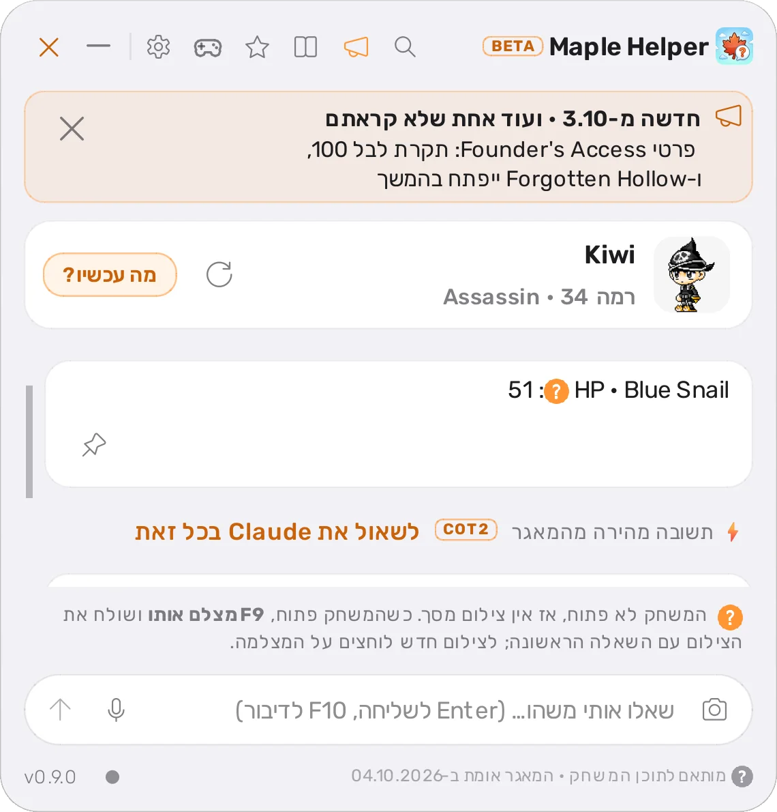
חינם Windows ו-macOS קוד פתוח
Maple Helper הוא חלון צ'אט שנפתח מעל MapleStory Classic World בלחיצה על F9. כותבים שאלה בעברית או באנגלית, ומקבלים תשובה עם תמונות שמבוססת על מאגר המשחק ועל מה שרואים אצלכם על המסך.
Maple Helper היא אפליקציה למחשב. פתחו את הדף הזה במחשב שעליו אתם משחקים כדי להוריד אותה.
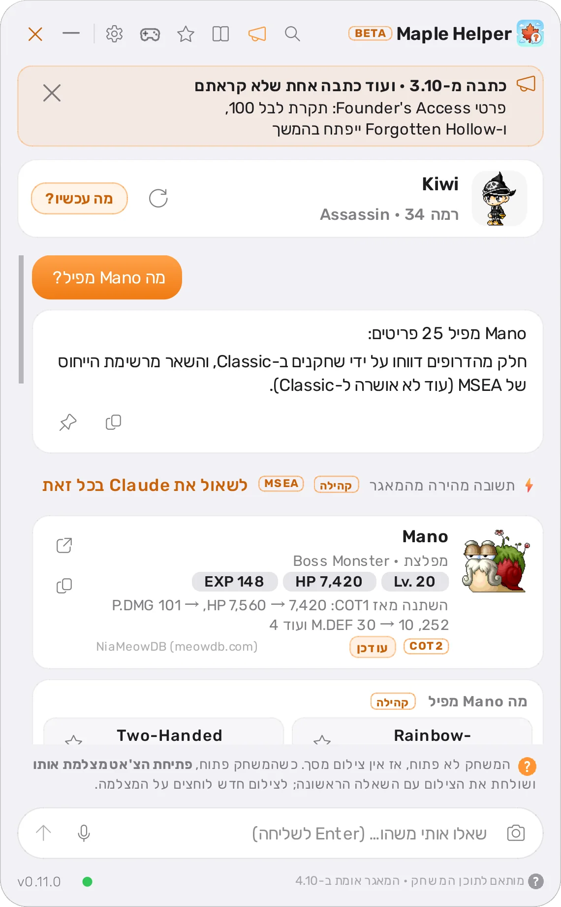
איך זה עובד
חלון הצ'אט נפתח מעל המשחק. לחיצה נוספת סוגרת אותו, והמשחק ממשיך כרגיל.
כותבים, או לוחצים F10 ומדברים. כשהצ'אט נפתח האפליקציה מצלמת את חלון המשחק, והצילום נשלח עם השאלה, כדי שהתשובה תתאים למה שקורה אצלכם עכשיו.
שאלות פשוטות, כמו HP של מפלצת או מי מפיל פריט, נענות מיד מהמאגר שעל המחשב. על שאלות מורכבות עונה ה-AI שבחרתם (Claude, ChatGPT, Gemini או Grok), על סמך מאגר של MapleStory Classic.
מה יש בו
כמה HP יש למפלצת, מה היא מפילה, איפה נמצא NPC. שאלות כאלה נענות תוך שנייה מהמאגר המקומי, בלי לחכות ל-AI.
אם רוצים הסבר מלא, כפתור אחד שולח את אותה שאלה ל-AI שלכם.

מפלצות, פריטים, מפות, NPC וקווסטים מופיעים ככרטיסים עם תמונה ונתונים. לוחצים על כרטיס ושואלים עליו, למשל "איפה זה?" או "מה יותר קל בשבילי?".
מסמנים פריט בכוכב, והוא נכנס לרשימה. ליד כל פריט רואים מי מפיל אותו, מהרמה הנמוכה לגבוהה, ובאיזו מפה.
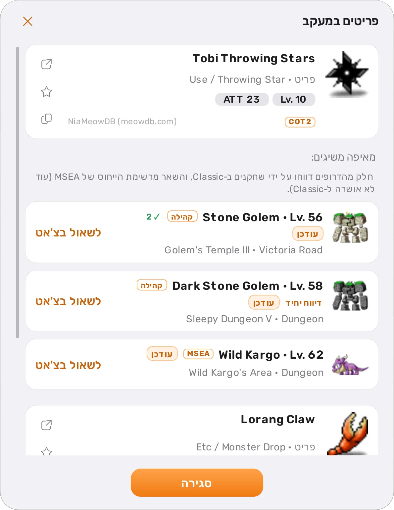
כל האפליקציה בעברית או באנגלית, לבחירתכם. שמות מהמשחק נשארים באנגלית ומוצגים נכון בתוך משפט בעברית. המקשים, גודל הגופן ואורך התשובות ניתנים לשינוי.
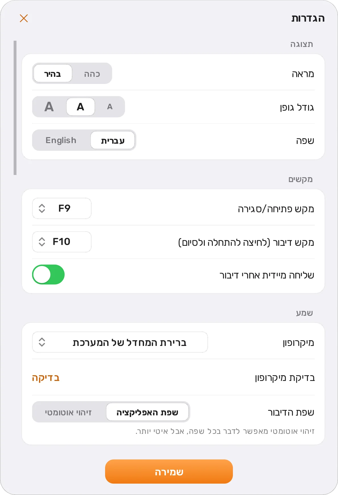
מדריכים לכל מקצוע, מפות גרינד, טבלת EXP, נוסחת הנזק ועוד. כולם מתורגמים לעברית, עם אייקונים של סקילים ופריטים, דמויות, טבלאות וטיפים.
המדריכים שמתאימים לדמות שלכם מופיעים ראשונים, וכפתור אחד שולח שאלה על המדריך לצ'אט.
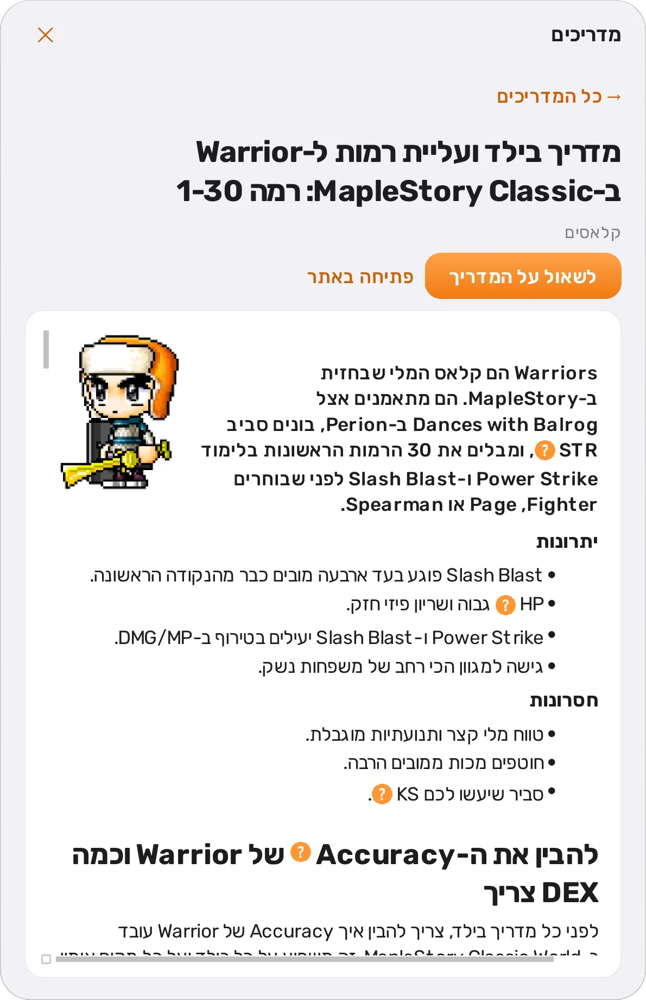
כשמאגר המשחק מתעדכן, רואים בדיוק מה השתנה: מפלצות ופריטים חדשים, דרופים שנוספו או הוסרו, ערכים ששונו. אם פריט מהרשימה שלכם קיבל דרופ חדש, תקבלו על זה הודעה.
אין צורך לעדכן ידנית. כשה-AI עונה, Maple Helper רואה את מסך המשחק ומעדכן את הרמה, הג'וב והתמונה של הדמות. אפשר לנהל כמה דמויות, ולכל אחת היסטוריה משלה.
Claude, ChatGPT, Gemini או Grok, דרך החשבון שלכם או מפתח API, ואפשר להחליף בכל רגע בהגדרות. האפליקציה מתקינה בשבילכם את הכלי הרשמי של כל אחד, עם התקדמות ישר באפליקציה, ומשאירה אותו לקריאה בלבד וממוקד במשחק: הוא לא יכול לשנות קבצים או לגלוש, ועל שאלות שלא קשורות למשחק הוא עונה בקצרה שהוא לא עוזר בהן.
לוחצים F10, מדברים, ולוחצים שוב לסיום. התמלול נעשה על המחשב, עם מודלים של ivrit.ai שמבינים עברית, וההקלטה לא יוצאת ממנו.
מראה נקי בסגנון זכוכית, עם כתום כצבע היחיד. בוחרים בהגדרות בין בהיר לכהה.
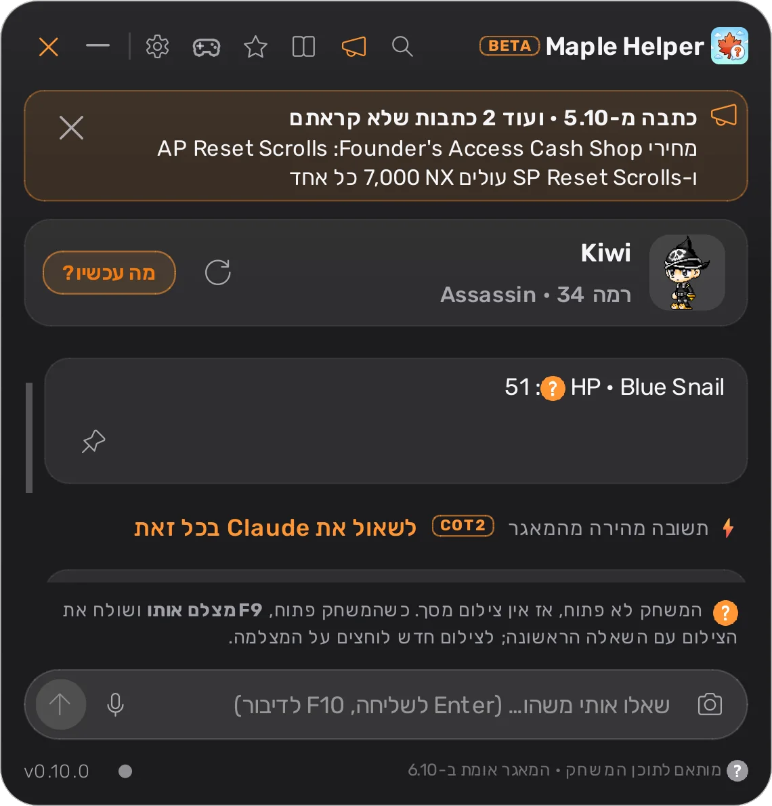
מאגר המשחק מתעדכן ברקע. ב-Windows גם האפליקציה עצמה מתעדכנת לבד, וב-macOS מופיעה הודעה עם קישור לגרסה החדשה.
לצד המשחק
כפתור הכלים בצ'אט פותח חלון שעומד ליד המשחק. כל מה שבו מחושב מהמאגר ומהדמות שלכם, בלי לשאול את ה-AI ובלי לחכות.
המפות הכי משתלמות לרמה שלכם, מדורגות: אחוז פגיעה, מכות להריגה, EXP וכמה הריגות עד הרמה הבאה. מעקב הגריינד מודד EXP ו-mesos לשעה מצילומי מסך.
במחשבון בוחרים מפלצת ורואים כמה ACC צריך כדי לא לפספס, ובלחיצה אחת עוברים לדרך אליה.
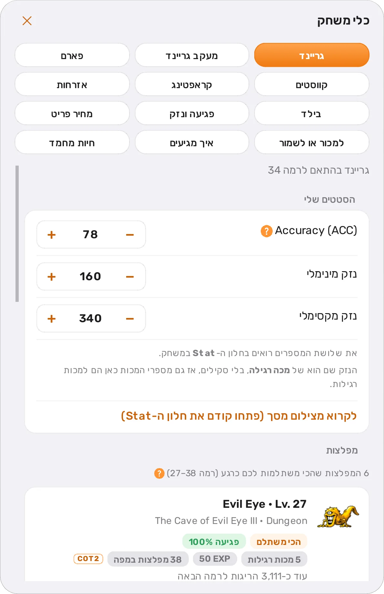
מי מפיל כל פריט, איפה ובאיזו רמה. מפלצות שמפילות מה שצריך לקווסטים, למתכונים ולפריטים שסימנתם בכוכב עולות ראשונות, ואחריהן מה שה-NPC משלם עליו הכי הרבה. סשן פארם סופר מה נוסף לתיק.
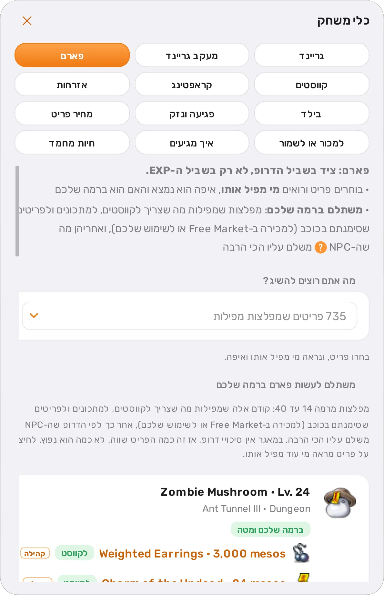
כל קווסט בכרטיס מלא: איפה מקבלים אותו, מה עושים, מה להביא ומאיפה משיגים, אצל מי מסיימים ומה מקבלים. קווסטים יומיים ושבועיים חוזרים לרשימה לבד, ואפשר לקפוץ לקווסט שצריך לסיים קודם.
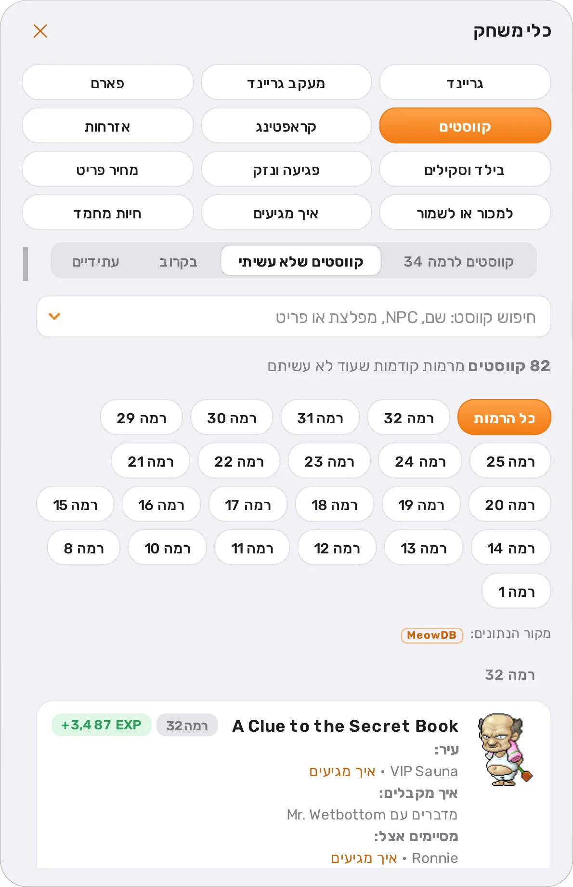
שישה מקצועות: המורה, הקווסטים, וכל המתכונים לפי רמות, עם חיפוש לפי שם או חומר. ליד כל חומר רואים מי מפיל אותו ובכמה הוא נמכר.
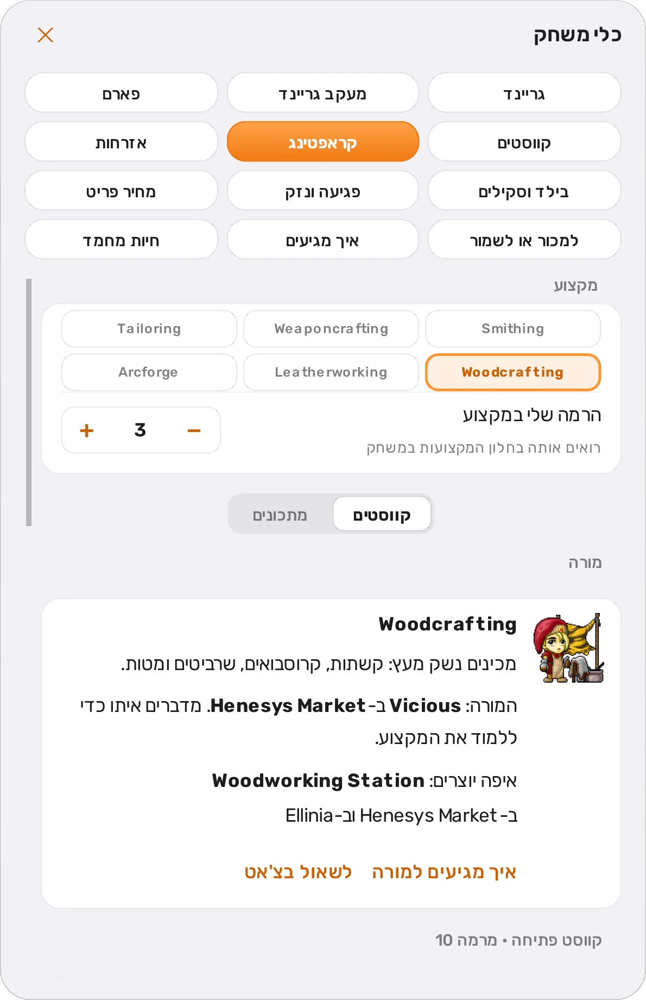
הקווסטים של Henesys ו-Kerning City לפי דרגת אזרחות, איך מקבלים כל אחד ומה עושים, והעיר שהמדריך ממליץ עליה לג'וב שלכם.
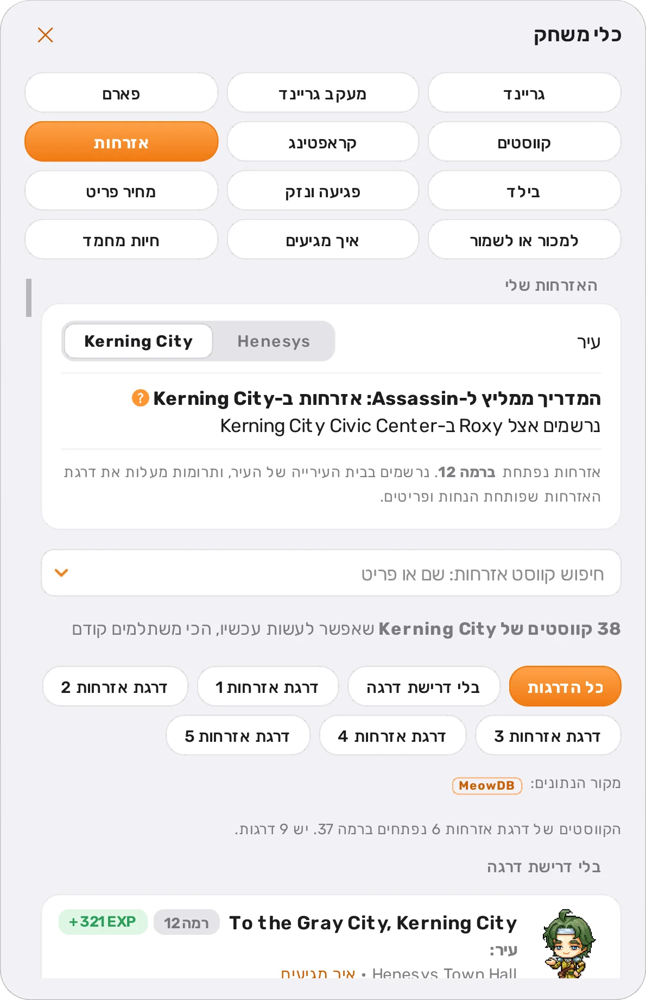
כל Pet שורה אחרי שורה: תוחלת חיים, רעב, כמה פקודות עד רמה 30 ואיזו פקודה הכי מהירה בכל שלב, המחיר בקאש שופ, והסקילים שאפשר לקנות לו.
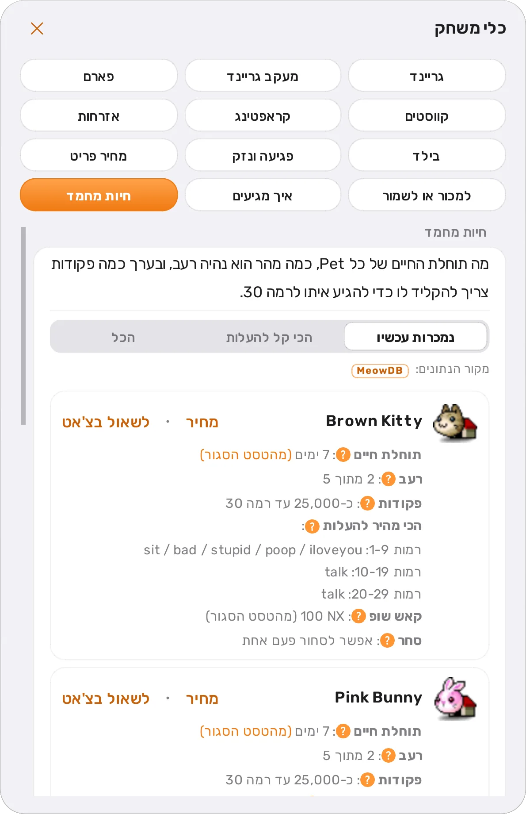
פותחים את האינבנטורי, והאפליקציה מזהה כל פריט ואומרת מה לעשות איתו: לשמור לקווסט, למתכון או לציוד, או למכור ל-NPC או ב-Free Market, ובכמה. בלי AI, לפי המאגר.
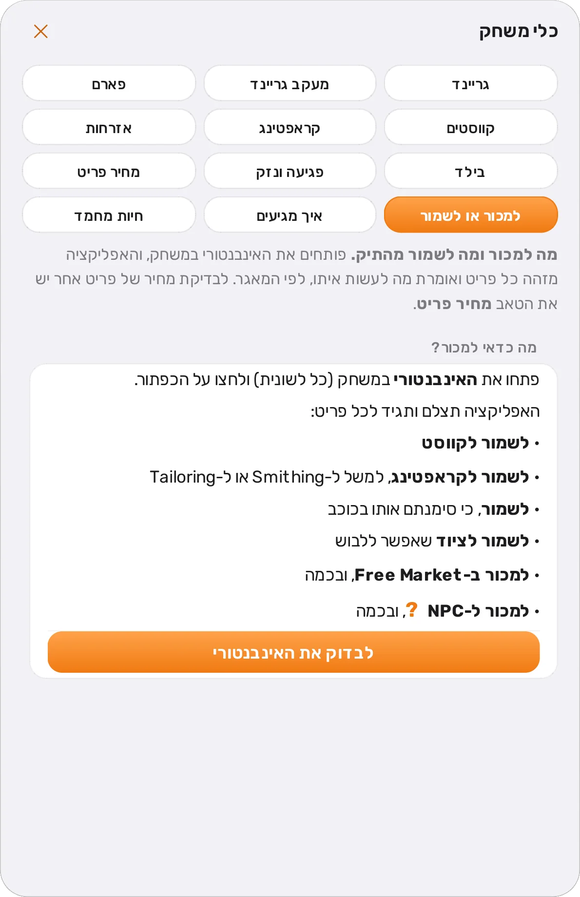
טבלאות ה-AP, ה-SP והציוד מהמדריך, עם השורה של הרמה שלכם מודגשת, וטבלה נפרדת לכל ג'וב שני.
מחירי NPC וחציון חי מה-Free Market לפי דיווחי שחקנים, לכל פריט שאפשר לסחור בו.
מכל מפלצת, פריט או NPC מגיעים בלחיצה לאיך מגיעים, פגיעה ונזק, פארם ומחיר. ליד כל מונח יש סימן ? עם הסבר, וכל תמונה גדלה בריחוף.
התקנה
ההתקנה לוקחת כמה דקות. האפליקציה מלווה אתכם בכל שלב, כולל ההתקנה והחיבור של ה-AI, ישר בתוך האפליקציה.
Windows
האזהרה מופיעה כי המתקין עדיין לא חתום בחתימה דיגיטלית, וזה עולה כסף. הקוד פתוח ב-GitHub לכל מי שרוצה לבדוק.
macOS
גם ל-MapleStory Classic World יש גרסת Mac: מתקינים את המשחק, ו-Maple Helper מוצא את החלון שלו לבד.
פרטיות ובטיחות
נשאר על המחשבהגדרות, דמויות, היסטוריית שיחות, הקלטות קול ומאגר המשחק. אין פרסומות ואין מעקב.
נשלח ל-AI שבחרתם, רק כשאתם שואליםהשאלה, צילום של חלון המשחק, וההקשר שצריך כדי לענות: פרטי הדמות, השיחה האחרונה וסיכומים קצרים של שיחות קודמות. כשסוגרים שיחה, היא עשויה להישלח פעם אחת כדי לסכם אותה לפעם הבאה.
לא נשלח בכללתשובות מיידיות מהמאגר והתמלול של הקול. הם נעשים על המחשב.
Maple Helper רק רואה את המסך, כמו תוכנת צילום מסך. הוא פותח חלון משלו מעל המשחק ותו לא.
זה כלי לא רשמי, שאין לו קשר ל-Nexon. אנחנו לא יכולים להבטיח מה תהיה מדיניות המשחק לגבי תוכנות עזר, והשימוש באחריותכם.
שאלות
האפליקציה חינמית והקוד שלה פתוח ב-GitHub. את התשובות המורכבות נותן ה-AI שבחרתם (Claude, ChatGPT, Gemini או Grok), דרך החשבון שלכם: Claude Pro או Max, מנוי ChatGPT בתשלום, חשבון Google בשביל Gemini, או חשבון Grok (גם חינמי, עם מכסה מוגבלת). אפשר גם מפתח API בתשלום לפי שימוש. התשובות המיידיות מהמאגר לא נספרות במנוי.
Maple Helper רק מצלם את המסך, כמו כל תוכנת צילום מסך. הוא לא קורא את הזיכרון או את הקבצים של המשחק, לא לוחץ על מקשים ולא משחק במקומכם.
עם זאת, זה כלי לא רשמי שאין לו קשר ל-Nexon, ואי אפשר להבטיח מה תהיה מדיניות המשחק. השימוש באחריותכם.
המתקין עדיין לא חתום בחתימה דיגיטלית, אז SmartScreen מזהיר על תוכנה לא מוכרת. לוחצים על "מידע נוסף" (More info) ואז על "הפעל בכל זאת" (Run anyway). הקוד פתוח ב-GitHub, וכל עדכון נבדק מול checksum לפני שהוא מותקן.
מהמאגר הציבורי של NiaMeowDB, עם קרדיט באפליקציה. עותק של המאגר נשמר על המחשב ומתעדכן לבד, וכשהוא מתעדכן האפליקציה מראה מה השתנה.
כן, על macOS 12 ומעלה עם מעבד Apple Silicon. גם ל-MapleStory Classic World יש גרסת Mac, ו-Maple Helper מוצא את חלון המשחק לפי השם שלו.
רק כשאתם שואלים, ורק ל-AI שבחרתם (Claude של Anthropic, ChatGPT של OpenAI, Gemini של Google או Grok של xAI): השאלה, צילום של חלון המשחק, וההקשר שצריך כדי לענות (פרטי הדמות, השיחה האחרונה וסיכומים קצרים של שיחות קודמות). ההגדרות, ההיסטוריה המלאה והקלטות הקול נשמרים על המחשב. כשסוגרים שיחה, היא עשויה להישלח פעם אחת כדי לסכם אותה לפעם הבאה.
ב-Windows האפליקציה מתעדכנת לבד ברקע. ב-macOS מופיעה הודעה בתפריט עם קישור לגרסה החדשה. מאגר המשחק מתעדכן לבד בשתי המערכות.

מורידים, מחברים את ה-AI שלכם, ולוחצים F9 בפעם הבאה שאתם במשחק.